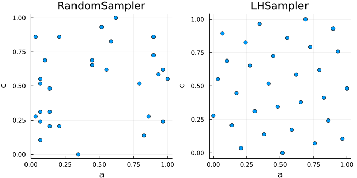

Samplers
A sampler determines the configurations that @hyperopt evaluates. It is selected with the argument sampler of @hyperopt. The following samplers draw the configurations of a fixed number of iterations:
| Sampler | Candidate vectors | Configurations |
|---|---|---|
RandomSampler | Any length, any element type | Drawn independently and with replacement |
LHSampler | Length equal to the number of iterations | Optimized Latin hypercube plan |
CLHSampler | Length equal to the number of iterations for Continuous hyperparameters, any length for Categorical hyperparameters | Optimized Latin hypercube plan with categorical dimensions |
Hyperband is a sampler that evaluates configurations drawn from one of these samplers, or from BOHB, with different budgets, see Hyperband.
The examples on this page use the following cost function of the hyperparameters a, b and c:
f(a, b, c) = (a - 3)^2 + (b ? 0 : 1) + (log10(c) - 1)^2f (generic function with 1 method)Random sampling
RandomSampler draws the value of each hyperparameter uniformly at random from its candidate vector. It is the default sampler.
ho = @hyperopt for i = 100,
sampler = RandomSampler(),
a = LinRange(1, 5, 50),
b = [true, false],
c = exp10.(LinRange(-1, 3, 50))
f(a, b, c)
endHyperoptimizer with
a length: 50
b length: Bool[1, 0]
c length: 50
minimum / maximum: (0.13660974593919198, 8.080383173677635)
minimizer:
a b c
2.959 1 23.3
By default, the random number generator of a RandomSampler is seeded from the global random number generator, so that Random.seed! makes the configurations reproducible. A random number generator can also be given explicitly, e.g., RandomSampler(Xoshiro(0)).
Latin hypercube sampling
LHSampler evaluates an optimized Latin hypercube plan, in which every element of each candidate vector occurs in exactly one configuration. All candidate vectors must therefore have the same length as the number of iterations; the candidates of b below are repeated to obtain the required length:
ho = @hyperopt for i = 100,
sampler = LHSampler(),
a = LinRange(1, 5, 100),
b = repeat([true, false], 50),
c = exp10.(LinRange(-1, 3, 100))
f(a, b, c)
endHyperoptimizer with
a length: 100
b length: 100
c length: 100
minimum / maximum: (0.0824405672890522, 6.355371900826444)
minimizer:
a b c
3.222 1 6.579
The plan is optimized such that the configurations are distributed evenly over the candidate values. The following figure compares the configurations of a random search and of a Latin hypercube plan with 30 iterations:
using Plots
candidates_a = LinRange(0, 1, 30)
candidates_c = LinRange(0, 1, 30)
ho_random = @hyperopt for i = 30, sampler = RandomSampler(), a = candidates_a, c = candidates_c
0.0
end
ho_lhs = @hyperopt for i = 30, sampler = LHSampler(), a = candidates_a, c = candidates_c
0.0
end
p1 = scatter(first.(ho_random.history), last.(ho_random.history), title = "RandomSampler")
p2 = scatter(first.(ho_lhs.history), last.(ho_lhs.history), title = "LHSampler")
plot(p1, p2, xlabel = "a", ylabel = "c", legend = false, aspect_ratio = :equal, size = (700, 350))
The keyword argument rng determines the random number generator from which the plan is drawn, e.g., LHSampler(rng = Xoshiro(0)) for a reproducible plan, and steps determines the number of proposed exchanges in the optimization of the plan, see LHSampler.
Latin hypercube sampling with categorical hyperparameters
CLHSampler admits categorical hyperparameters with fewer candidates than the number of iterations. The keyword argument dims contains one dimension type per hyperparameter: Continuous() for a hyperparameter whose candidate vector has the same length as the number of iterations, and Categorical(k) or, equivalently, UnorderedCategorical(k) for a categorical hyperparameter with k candidates:
ho = @hyperopt for i = 100,
sampler = CLHSampler(dims = [Continuous(), Categorical(2), Continuous()]),
a = LinRange(1, 5, 100),
b = [true, false],
c = exp10.(LinRange(-1, 3, 100))
f(a, b, c)
end
count(h -> h[2], ho.history) # The number of configurations with b = true50Each candidate of b occurs in 50 configurations, and the plan distributes the configurations with b = true, as well as those with b = false, over the ranges of a and c. The categorical candidates are treated as unordered.
New plans in continued optimizations
A run that continues an existing Hyperoptimizer with ho = ... continues its sampler. A RandomSampler continues its random number generator. LHSampler and CLHSampler evaluate a new plan in every run, and the optimization of the new plan avoids configurations that were evaluated before:
ho = @hyperopt for i = 100, ho = ho,
sampler = CLHSampler(dims = [Continuous(), Categorical(2), Continuous()]),
a = LinRange(1, 5, 100),
b = [true, false],
c = exp10.(LinRange(-1, 3, 100))
f(a, b, c)
end
length(ho.history), length(unique(ho.history))(200, 200)The same applies to an iteration over a Hyperoptimizer that begins after results were recorded, see Manual iteration.